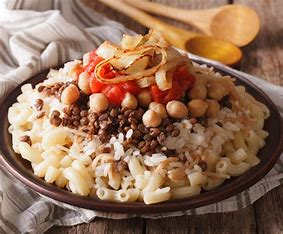
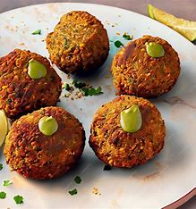

My Favourite food in Egypt
Kushari
koshari is Egypt's national dish and a widely popular street food. It is a traditional Egyptian staple, mixing pasta, Egyptian fried rice, vermicelli and brown lentils, and topped with chickpeas
fool w taameya
In Egypt, the falafel equivalent is called ta'ameya, and it's commonly eaten for breakfast. Ta'ameya is slightly different from traditional falafel because it's made with fava beans instead of only chickpeas. The fava beans make the texture a bit softer on the inside.
